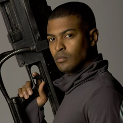

| Home | The Doctors | The Companions | The Villains |
|
|||
| cf
[
Mickey Smith's HomepageMickey Smith On-off boyfriend of Rose Tyler, Mickey Smith was drawn into the Doctor’s world when he was captured and replicated by the Nestene Consciousness. When Rose vanished for a year with the Doctor, Mickey was questioned over her disappearance. Despite this, and getting called “Mickey the Idiot”, he helped the Doctor and Rose defeat the Slitheen, Sycorax and Krillitanes. He opted to remain in the parallel “Pete’s World” when he discovered that the parallel version of the Grandmother who raised him was a still alive. From there, he assisted Pete and Jake rid their world of Cybermen, before jumping realities and fighting the Battle of Canary Wharf. After a period of living in that world with the Tylers, he returned to his originalEarth, where he married Martha Jones. ] |